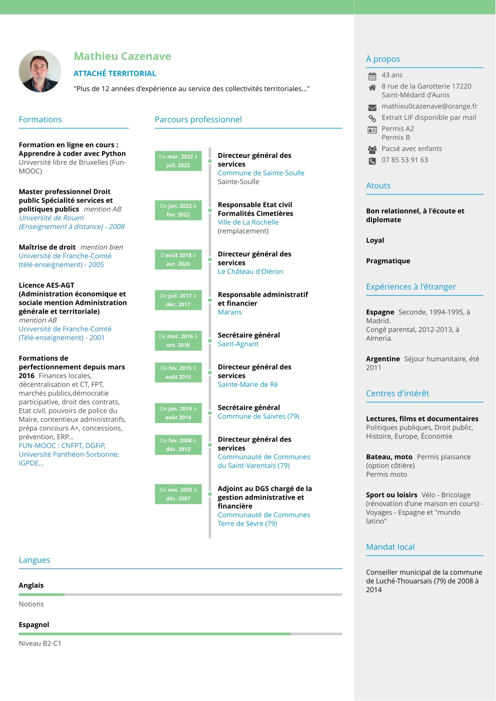

Je m'appelle Mathieu Cazenave. J'ai acquis plus de 12 années d'expérience au service des collectivités territoriales, dont 9 ans en tant que directeur général des services (DGS) ou secrétaire général. J'ai poursuivi des études universitaires, à distance à partir de la licence AES-AGT tout en travaillant, jusqu'à l'obtention d'un master professionnel de Droit public. En disponibilité pour rapprochement familial depuis 2015, j'ai également occupé plusieurs postes de direction en Charente-Maritime, dans le cadre de missions temporaires : à Sainte-Marie de Ré, Saint-Agnant, Marans, La Rochelle et Sainte-Soulle.
Ce parcours, combinant théorie et pratique, m'a permis d'acquérir des solides compétences juridiques et managériales notamment en droit public et en matière de finances locales, indispensables au bon fonctionnement et à la conduite des grands projets d'une collectivité. En tant que DGS "volant", j'ai pu également connaître des organisations différentes, des compétences ou des projets communaux variant en fonction des territoires et des élus.
En tant que cadre dirigeant, je connais bien les besoins dans leur gestion administrative, juridique ou financière et sais combien la charge de travail est de plus en plus lourde et complexe.
Le plus souvent, les gestionnaires passent beaucoup de temps « la tête dans le guidon » au détriment du développement des projets territoriaux. Cette gestion chronophage peut aussi peser sur les ressources humaines et donc sur le bien-être des agents.
En outre, les collectivités de taille petite ou moyenne n’ont pas toujours les moyens d’avoir en interne les compétences d’un cadre dans tous ces domaines.
Cette plate-forme en ligne a ainsi était créée pour aider les maires et cadres des collectivités dans la gestion administrative, juridique et financière de leur commune (ou syndicat de communes). L’objectif et de leur apporter une assistance administrative ponctuelle (un coup de pouce administratif!) et leur proposer des outils informatiques pour automatiser toutes les tâches juridiques, administratives et financières qui peuvent l’être afin d’alléger leur charge de travail pour qu’ils puissent consacrer plus de temps au développement des projets, à l’amélioration des conditions de travail et donc, in fine, à celle de la qualité des services publics locaux.
